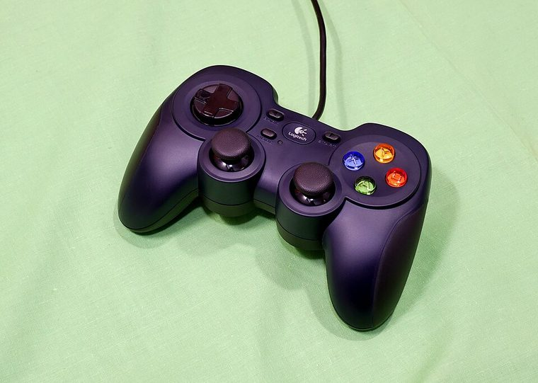
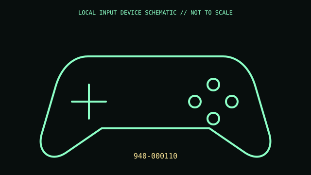

[ GAME CONTROLLERS // IDENTIFIED COMPONENT ]
Logitech F310 Gamepad
Wired PC gamepad with physical XInput/DirectInput mode selector.


MODEL IDENTIFICATION: 940-000110. Confirm the printed SKU, revision, bundle, region, and supplied accessories before repair or compatibility claims.
Model specifications
| Catalog leaf | Game controllers |
|---|---|
| Exact model / identifier | 940-000110 |
| Physical mechanism and primary specifications | USB-A wired; dual analog sticks; 4-switch D-pad; 10 programmable controls; 1.8 m cable; no rumble. |
| Compatibility and interface caveats | D/X selector chooses XInput or DirectInput. Some games support only one API; legacy Profiler and host support vary. |
| Revision identification | Record complete product label, revision, region, and accessories. Similar family names may differ in protocol, connector, feature set, and host requirements. |
Preservation and service
Keep cable strain relieved, clean controls dry, and inspect mode switch setting during input troubleshooting.
Record observed condition, accessories, host OS, driver/app version, and test conditions separately from vendor specifications.
Primary manufacturer sources
- Logitech F310 productManufacturer documentation; verify exact PID and regional/revision markings against the physical unit.
- Logitech F310 technical specificationsManufacturer documentation; verify exact PID and regional/revision markings against the physical unit.
Retain the applicable manual with the equipment record; manufacturer support pages and software availability may change.